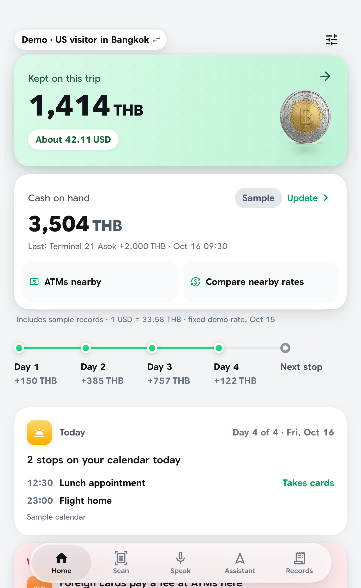

The AI keeps count
On this trip. Includes sample records.
Cash on hand updates itself: ATM, cash haggles, cash bills. Not card payments.Nearby ATMs. Live exchange-counter rates (ThaiRate, CC BY 4.0, every 15 min).
